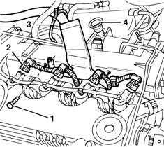
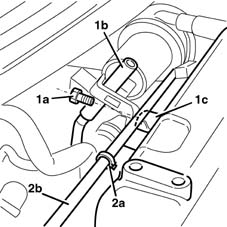
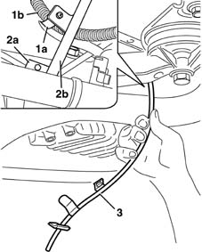
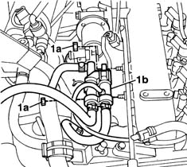
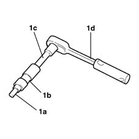
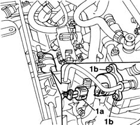
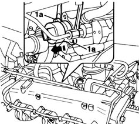
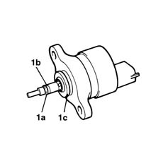

1060E50 Fuel pressure REGULATOR - R.R.
- Path
- Procedures > 10 ENGINE UNIT > 1060 DIESEL FUEL INJECTION > 1060E diesel pressure pump > 1060E50 Fuel pressure REGULATOR - R.R.
- Kind
- repair procedure (removal / refitting; the operation number is the code)
- Applies to
- engines: 1.9 JTD 8V; all production periods
- Interactive page
- https://sloeber94.github.io/elrnDB-fMltpl/en/#/2891400
Applies to: engines: 1.9 JTD 8V; all production periods; only with equipment: Euro 3
 Removing
Removing
 Refitting
Refitting7055B54 under-engine guard - r r
1016A10 sound-proofing cover - r + r
1. Undo the bolt (1) fixing the cable loom to the intake manifold.
2. Disconnect the electrical connectors (2) for the injectors.
3. Cut the band (3) retaining the injection wiring.
4. Remove the oil dipstick (4).

Applies to: engines: 1.9 JTD 8V; all production periods; only with equipment: Euro 3
1. Undo the bolt (1a) fixing the oil dipstick pipe (1b) to the intake manifold (1c).
2. Open the band (2a) retaining the excess diesel rigid return pipe (2b).

Applies to: engines: 1.9 JTD 8V; all production periods; only with equipment: Euro 3
Raise the car.
1. Open the band (1a) and release the wiring (1b) for the rpm sensor and motor/alternator.
2. Undo the bolt (2a) fixing the oil dipstick pipe (2b) to the crankcase.
3. Remove the oil dipstick pipe from underneath.

Applies to: engines: 1.9 JTD 8V; all production periods; only with equipment: Euro 3
Lower the vehicle.
1. Undo the nuts (1a) fixing the fuel return manifold pipe (1b) to the inlet manifold and then move it aside.

Applies to: engines: 1.9 JTD 8V; all production periods; only with equipment: Euro 3
1. After positioning something suitable for collecting any components that may fall under the regulator during the following stages, prepare a spanner composed of the following USAG components: insert (1a) type: 660TX30; connector (1b) type: 330.1/4; extension (1c) type: 236 1/4; ratchet (1d) type: 237 1/4 SI

Applies to: engines: 1.9 JTD 8V; all production periods; only with equipment: Euro 3
1. Disconnect the electrical connector (1a) for the pressure regulator, then undo the bolts (1b) fixing the regulator to the pump.

Applies to: engines: 1.9 JTD 8V; all production periods; only with equipment: Euro 3
1. Grip the outer casing of the regulator, partly extract it and, at the same time, turn it so that the fins (1a) in which the openings for the fixing bolts are located are positioned horizontally, then insert the blades of two screwdrivers by the fins and very carefully extract the pressure regulator.

Applies to: engines: 1.9 JTD 8V; all production periods; only with equipment: Euro 3
1. After having removed the regulator, check that the high pressure seal (black or green), the anti-extrusion seal (1b) (white) and the low pressure seal (1c) (black) are present and intact.

Applies to: engines: 1.9 JTD 8V; all production periods; only with equipment: Euro 3
Refitting
RemovingSuction off any impurities inside the pump casing.
Before fitting, check the condition of the three seals and make sure they are correctly positioned.
Lubricate the outer surface of the three seals using vaseline.
Fit the pressure regulator in its housing on the pump, pressing gently and, at the same time, rotating the regulator until it is in contact with the surface of the pump.
Tighten the pressure regulator retaining bolts.
 | Fastening | Component | Ø | Value (daNm) |
|---|---|---|---|---|
- | Bolt | FUEL RECOVERY PIPES FROM INJECTORS | - | 0.9 |
Conect the electrical connection for the pressure regulator.
 | Name | Connector |
|---|---|---|
- | Fuel pressure regulator |
Position the fuel return manifold pipe and tighten the nuts fixing it to the inlet manifold.
Raise the car.
Position the oil dipstick pipe and tighten the bolt fixing it to the crankcase.
Position the wiring for the rpm sensor and motor/alternator and close the retaining band.
Lower the vehicle.
Position the excess diesel rigid return pipe and close the retaining band.
Tighten the oil dipstick bolts.
Position the oil dipstick.
Fasten a new injection wiring band.
Connect the electrical connections to the injectors.
| Name | Connector |
|---|---|---|
- | Injector |
Tighten the bolt fixing the cable loom to the inlet manifold.
1016A10 sound-proofing cover - r + r
- 7055B14 Front BUMPER, removed - Stripping - Includes. R.R. components